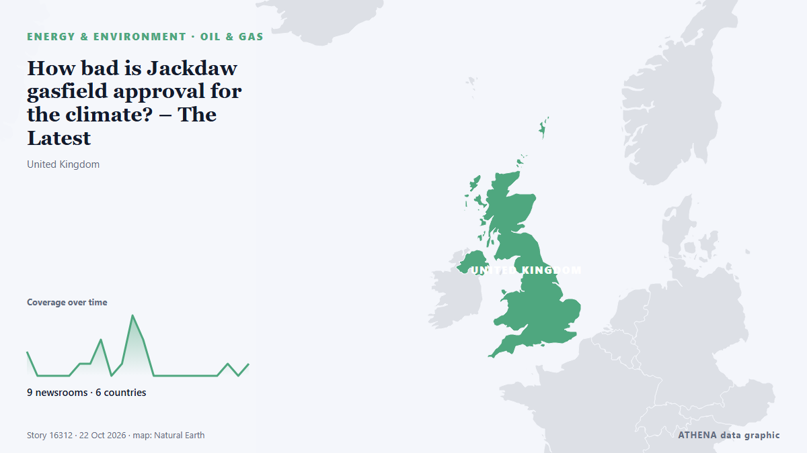

How bad is Jackdaw gasfield approval for the climate? – The Latest

Climate campaigners have condemned the UK government’s decision to allow the drilling of the Jackdaw gasfield. από Guardian Business
Αναφέρθηκε ανεξάρτητα από 9 μέσα σε 6 χώρες από τις 20 Οκτ, πρώτο το Guardian Business· η κάλυψη εξασθενεί. Το ATHENA εκτιμά τον κίνδυνο χαμηλό (1.5/10), κυρίως λόγω της σοβαρότητάς του και της τεκμηρίωσης. Βεβαιότητα 86% (υψηλή): το επιβεβαιώνουν 9 ανεξάρτητα μέσα, μέση αξιοπιστία 74%. Μέσα ανά χώρα: Ηνωμένο Βασίλειο (9), Ηνωμένες Πολιτείες (5), Ιρλανδία (1). Κάλυψη: 20 Οκτ έως 22 Οκτ, 43 ώρες.
Γιατί έχει σημασία: Οι ανακαλύψεις φυσικού αερίου και τα νέα ηλεκτρικά και καλώδια δεδομένων έκαναν την Ανατολική Μεσόγειο πεδίο ανταγωνισμού για τις θαλάσσιες ζώνες, με την Ελλάδα, την Κύπρο και την Τουρκία στο επίκεντρο.
Τι άλλαξε: 10 νέες αναφορές από 6 μέσα στο 24ωρο έως 22 Οκτ.
Οι τίτλοι των ειδήσεων παρουσιάζονται στα αγγλικά, όπως δημοσιεύτηκαν.
Με μια ματιά
Επιλέγεται, βαθμολογείται και γράφεται από τη δημοσιευμένη μεθοδολογία του ATHENA. Κανένας συντάκτης δεν παρεμβαίνει σε μεμονωμένα γεγονότα. Πώς παράγεται ›
| 20 Oct 18:58 UTC | 2 |
|---|---|
| 20 Oct 20:58 UTC | 0 |
| 20 Oct 22:58 UTC | 0 |
| 21 Oct 00:58 UTC | 0 |
| 21 Oct 02:58 UTC | 0 |
| 21 Oct 04:58 UTC | 1 |
| 21 Oct 06:58 UTC | 1 |
| 21 Oct 08:58 UTC | 3 |
| 21 Oct 10:58 UTC | 0 |
| 21 Oct 12:58 UTC | 1 |
| 21 Oct 14:58 UTC | 5 |
| 21 Oct 16:58 UTC | 3 |
| 21 Oct 18:58 UTC | 0 |
| 21 Oct 20:58 UTC | 0 |
| 21 Oct 22:58 UTC | 0 |
| 22 Oct 00:58 UTC | 0 |
| 22 Oct 02:58 UTC | 0 |
| 22 Oct 04:58 UTC | 0 |
| 22 Oct 06:58 UTC | 0 |
| 22 Oct 08:58 UTC | 1 |
| 22 Oct 10:58 UTC | 0 |
| 22 Oct 12:58 UTC | 1 |
| 22 Oct 07:06 UTC | 0.0 |
|---|---|
| 22 Oct 07:06 UTC | 1.5 |
| 22 Oct 14:00 UTC | 1.5 |
Γιατί αυτοί οι αριθμοί
Σημασία
Κίνδυνος
Βεβαιότητα
Η κάλυψη — ποιος το ανέφερε και πότε
ο τίτλος όπως δημοσιεύτηκε · ανοίγει το πρωτότυπο- Guardian Business · Ηνωμένο ΒασίλειοWhat does the UK’s approval of the Jackdaw gasfield mean?
- New York Times Business · Ηνωμένες ΠολιτείεςBritain Is Said to Approve New Gas Drilling in the North Sea
- RTÉ News · ΙρλανδίαUK government approves drilling in Jackdaw gas field
- The National · Ηνωμένα Αραβικά ΕμιράταUK approves long-awaited Jackdaw gasfield in North Sea
- DW English · ΓερμανίαUK approves Jackdaw gas field after years in limbo
- Rigzone · Ηνωμένες ΠολιτείεςUK Greenlights $3B Jackdaw Gas Project
- Guardian Business · Ηνωμένο Βασίλειο‘Jackdaw means we pay our mortgages’: relief in Aberdeen over gasfield approval
- Guardian Environment · Ηνωμένο ΒασίλειοAndy Burnham says decision on Jackdaw is something the Tories 'messed up' - video
- The Straits Times · ΣιγκαπούρηUK approves drilling in controversial Jackdaw gas field, Trump hails ‘great news’
- New York Times Business · Ηνωμένες ΠολιτείεςU.K. Approves Long-Stalled Jackdaw Gas Drilling Project in the North Sea
- OilPrice.com · Ηνωμένο ΒασίλειοUK Greenlights Major North Sea Gas Field After Years of Legal Battles
- Guardian Business · Ηνωμένο ΒασίλειοBen Jennings on Andy Burnham’s decision to approve the Jackdaw North Sea gasfield – cartoon
- gCaptain · Ηνωμένες ΠολιτείεςUK Approves Long-delayed Jackdaw Gas Field on Energy Security Grounds
- Guardian Business · Ηνωμένο ΒασίλειοJackdaw approval is a step towards a grownup North Sea policy
- Guardian Business · Ηνωμένο ΒασίλειοDrill, baby, drill? Climate campaigners condemn Jackdaw gasfield approval - The Latest
- Guardian Business · Ηνωμένο ΒασίλειοHow bad is Jackdaw gasfield approval for the climate? – The Latest
- Rigzone · Ηνωμένες ΠολιτείεςUK Union Welcomes Jackdaw Decision
- OilPrice.com · Ηνωμένο ΒασίλειοWhat Jackdaw’s Approval Means for the Future of North Sea Drilling